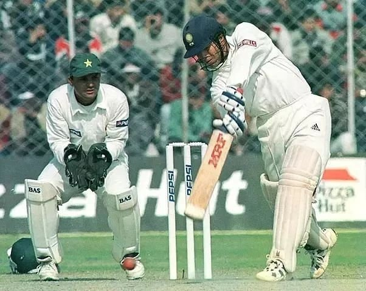
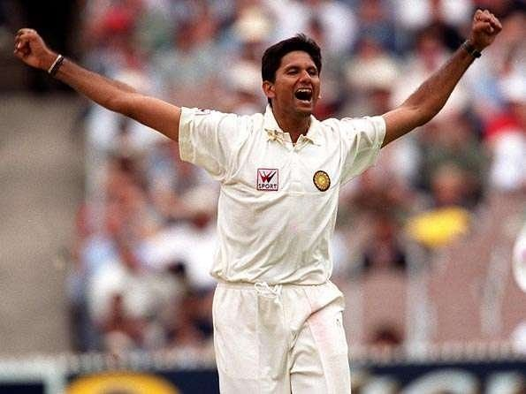
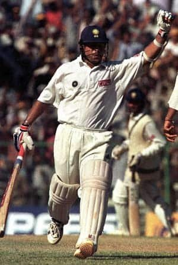
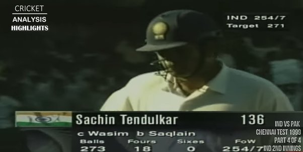

407 minutes
-December 17, 2022
Cricket, is ridiculous.
A game personified by grit, perseverance and determination, fueled by emotion.
A game that gives you unforgettable moments, etched in your heart for eternity, elevating you in exhilaration, is yet, a sport that can abandon you in a desert of excruciating pain, where no matter how much you try, tears flow through your eyes in agony.
It’s indeed a tragedy that a man, crippled by back strain, fighting for his team under immense pressure, who was at the crease for a whopping 407 minutes, had to experience defeat. The sport hasn’t been fair on its best.

Preview
It was the first time the archrivals India and Pakistan locked horns in nearly a decade, amidst social and political turmoil between them. The first test, was to be played in Chennai, on a rank turner. The stage was set, for an enthralling test match.
Batting first, Pakistan had put up 238 on the board, courtesy of a lower order assault from Moin Khan and Wasim Akram. It was a good total, considering the pitch conditions and the quality of the Indian bowling lineup. Anil Kumble, who was in the form of his life, once again starred with 6 wickets to his name.
However, India managed to secure a narrow lead of 18 runs, by a batting performance scattered across its lineup. With a slender lead of just 18 runs, the game was hanging in balance. Pakistan knew that if they can put up a good total on the board in the second innings, they can secure an upper hand in this historic spin-off.
And that’s exactly what they did. A ruthless assault from ‘Boom Boom’ Afridi, blistering his way to a scintillating 141 of 191 deliveries, placing Pakistan in the driver’s seat. At 275–4, they were well set to put up a humongous target for India, which was nearly impossible to chase on that kind of a pitch against the quality of Pakistan.
But what followed, what purely magical.

Venkatesh Prasad had converted himself into an Ambrose, bowling one of the best spells one could ever see in his life, ripping through the Pakistani batting lineup in a sensational spell that read 5–0.
Pakistan, who were in a commanding position at 275–4, were all out for just 286, as India left the field with their heads high.
India, had momentum on their side.
Waqar Younis has the new ball in his hand. He bowls a good length delivery. Sadagopan Ramesh departs.
VVS Laxman is on strike. Waqar bowls an absolute jaffa, which nipps back in, bewildering VVS. The score now, 6/2.
Pakistan, have had the dream start. India was in shambles. The momentum that they had coming into the innings, was broken. Pakistan has the upper hand now.
Then came in the master, Sachin Tendulkar, fighting a back strain. And right away, Waqar greets him with an unexpected bouncer. Tendulkar ducks it as Waqar stares at him.
And on the very next ball, he shows his class and drives it through covers for a glorious boundary.
It was game on. The pressure was brewing.
It was test cricket at its best.
At the end of the day, Sachin had steered India to 40/2. On the 4th day, India had to chase 231 more, with 8 wickets in hand.
And on the very first ball of the day, Sachin stamps his authority, as he glances it to the boundary.
The Batting Maestro had decided: This, was his day. This, was his game.
However, his teammates couldn’t replicate his genius, as they fell without scoring much. Dravid was dismissed courtesy of a beauty from Wasim.
The duo of Wasim-Waqar was at its absolute best, unleashing a barrage of bouncers over Azharuddin for nearly an hour, making every minute of his stay at the crease, dreadful.
And that was when, the magician, Saqlain Mushtaq was brought into the attack. And he delivered right away, removing Azharuddin, after his underwhelming performance. He was accompanied by Shahid Afridi and Nadeem Khan, who held one end, allowing Saqlain to continue his sorcery.
Ganguly too, was bamboozled by Saqlain soon after. India were left reeling at 82/5, on the brink of a humiliating defeat.
The runs dried up. It became harder and harder to score. Pressure kept increasing.
But there was one good thing for India: a stable partnership between Mongia and Tendulkar was building, though it was looking extremely vulnerable to the stellar Pakistani unit.
Sachin reached his fifty; one of his most hard-fought ones, where he earned every single one of those runs, against a formidable bowling lineup, despite his back strain, which was deteriorating with time. The warrior had delivered again.
Despite the scuffles, India wrestled themselves towards 156/5, providing the fans with a glimmer of hope. The game, hung in balance.
That was when, an extraordinary over followed, which had every Indian bursting out of his seat.
- On the first ball, Sachin sweeps Saqlain through covers for a boundary. The penance, had ended. Sachin, was on the groove.
- On the second ball, Sachin comes down the track and tries smash it over the fence, however, he gets an inside edge which goes straight to the keeper….only to be dropped. Moin Khan, what have you done? Has he dropped the game? One thing was clear: Pakistan were gonna regret dropping him very soon.
- On the third ball, Sachin doesn’t show any hesitation again, as he plays the paddle sweep and adds four more runs to the tally. All of a sudden, there is a sense of panic among the Pakistanis. Sachin, was on fire.
- Fourth ball, once again, pitched up, as Sachin smashes it over midwicket for a beautiful boundary. The crowd was roaring. It was the little master at his best. The Pakistanis were distraught. The nervous 90s didn’t haunt Tendulkar here, as he continued his fearless exhibition.
- Fifth ball, Sachin sneaks a single and gets to what is one of the most glorious hundreds ever scored in the history of the age-old sport. The God had done it again. He wasn’t gonna leave the field without a fight.
- The last ball was once again smashed for a boundary, but this time, Nayan Mongia too joins the party! The whole over was a treat for the Indians, as it marked a remarkable shift in momentum. The Indians, were back in the hunt, led by the Tendulkar.

The onslaught continued from the Indians as the flow of runs didn’t seem to stop. The drives, the pulls the cuts, the sweeps-everything Sachin was ever known for-were at its immaculate best. It was an innings of unprecedented quality.
Nayan Mongia also provided excellent support to him, as he reached his 50 with a colossal six off Saqlain. The best bowler of the Pakistani lineup was taken to the cleaners. However, his stay didn’t last any longer, as he was finally removed by Akram.
Yet, the big man- Tendulkar was still there; So did the Indian hopes.
And he showed no sign of stopping. He continued attacking, as the target started to narrow down. India were on the verge of a historic win, one that seemed impossible just a few hours ago.
With only 25 runs to get, Sachin smacks a couple of boundaries. He was in a hurry to finish this game. The acceleration was unbelievable. The Pakistanis held their heads in dismay, it was their game to lose. A genius had single-handedly destroyed them, inch-by-inch.
Only 17 runs were required now. Sachin, in a hurry, tries to hit a hasty shot which goes up in the air.
And that was it. Tendulkar was gone.

The Indians couldn’t believe it. The Pakistanis were overjoyed. Pin-drop silence in the crowd. The spectacle was finally over, so was India’s hopes of winning the game.
Sachin left the ground teary-eyed, devoured by guilt and regret, as he knew that the game was over there.
Cricket had never seen such a display of resilience on its 22 yards. Cricket, had never seen a knock of such impeccable Strokeplay. Cricket, will never see another Sachin Tendulkar.
136 of 273 balls, lasted for 407 minutes on the pitch, forever in the hearts of cricketing fans.